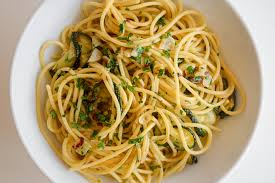

Home
Spaghetti Aglio e Olio (Garlic and Olive Oil Pasta)

Description
Spaghetti Aglio e Olio is a classic Italian pasta dish that’s simple
yet packed with flavor. Originating from Naples, it’s made with just
a few basic ingredients: spaghetti, garlic, olive oil, and chili flakes,
creating a rich and satisfying meal. The beauty of this dish lies in its
simplicity—it’s quick to prepare, with the garlic and olive oil creating
a savory, aromatic base that perfectly coats the pasta. It’s a perfect go-to
meal when you’re craving something light but delicious.
Ingredients
- 200g spaghetti
- 4 cloves garlic (sliced thinly)
- 1/4 cup extra virgin olive oil
- 1/4 tsp red pepper flakes (optional for a bit of heat)
- Salt (to taste)
- Fresh parsley (chopped)
- Grated Parmesan (optional)
Steps
- Cook the spaghetti: Boil salted water in a large pot and cook spaghetti according to the package instructions (usually around 8-10 minutes). Reserve about 1/2 cup of pasta water and drain the rest.
- Prepare the garlic oil: In a large skillet, heat the olive oil over medium heat. Add the sliced garlic and sauté until golden (2-3 minutes), being careful not to burn it.
- Combine pasta and garlic oil: Add the drained spaghetti to the skillet with the garlic oil. Toss it around to coat the pasta in the oil. If the pasta looks too dry, add a bit of the reserved pasta water.
- Finish the dish: Sprinkle in red pepper flakes, salt to taste, and chopped parsley. Toss again. Optionally, top with grated Parmesan.
- Serve and enjoy!